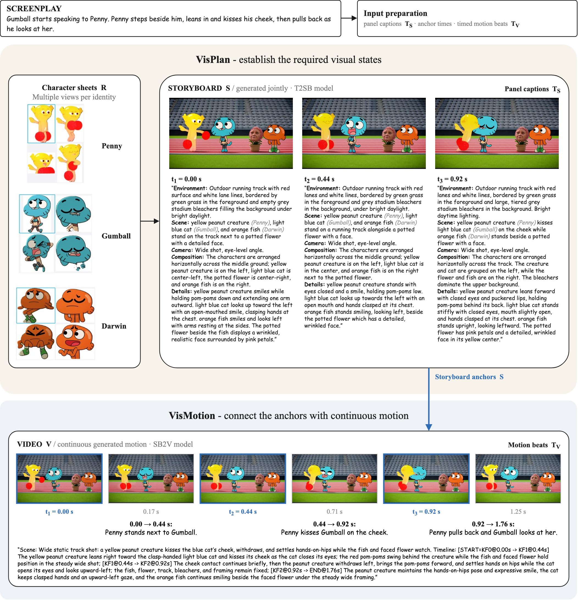
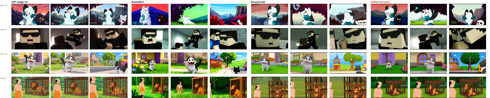

A Picture Before a Thousand Frames: Storyboarding for Consistent and Controllable Video Generation
Anonymous submission — double-blind review
Abstract
Despite advances in single-shot text-to-video generation, maintaining appearance and motion consistency across long-form videos remains challenging. We hypothesize that these limitations stem, in part, from the underconstrained nature of direct text-to-video generation, which attempts to jointly resolve visual appearance, scene composition, and motion without explicit planning. Inspired by traditional filmmaking, we introduce VisCraft, an end-to-end framework that explicitly plans visual states through reference-conditioned storyboard generation (VisPlan) and subsequently synthesizes their transitions using a storyboard-anchored video generation model (VisMotion). This decomposition grounds appearance and motion in shared visual anchors, enabling more consistent and controllable generation across shots. To train these models, we augment a multi-shot video dataset with structured visual references, storyboard panels, and temporally aligned descriptions. We further introduce VisCraftBench, a benchmark for evaluating appearance consistency, state coverage, instruction adherence, and temporal execution, and systematically investigate the effects of reference representations, anchor selection, conditioning strategies, and training formulations. Our results demonstrate that explicit visual planning and anchor-conditioned motion synthesis improve appearance and motion consistency over direct generation, while revealing the importance of reference quality and anchor selection. Our code, enriched multi-shot dataset, and evaluation benchmark will be released upon publication.
Method
VisCraft separates the two coupled problems that direct text-to-video generation collapses into one mapping. VisPlan generates the storyboard: the key visual states of each scripted event, planned jointly from factored panel captions and conditioned on per-character reference sheets. VisMotion then generates the video between those states, anchored to the panels at scheduled times and timed by motion beats. The anchors constrain appearance, geometry, and state at selected moments — multiple panels may belong to a single shot — while the video model is free to synthesize the intervening motion. Both models are trained on a multi-shot video dataset enriched with structured visual references, storyboard panels, and temporally aligned descriptions.

Qualitative results

Results
End-to-end video consistency on the matched multi-shot video set (735 windows from 140 source videos).
| Storyboard source | Video generator | GT-CIDS CLIP | GT-CIDS DINOv2 | GT-CSD | CIDS-cross CLIP | CIDS-cross DINOv2 |
VBench Subject | VBench Background |
|---|---|---|---|---|---|---|---|---|
| None (direct) | MiniMax | 0.8192 | 0.5968 | 0.6937 | 0.7775 | 0.5599 | 0.9432 | 0.9513 |
| DreamShot-SFT | MiniMax | 0.8264 | 0.6139 | 0.7357 | 0.7808 | 0.5599 | 0.9398 | 0.9460 |
| DreamShot-SFT | VisMotion‡ | 0.8270 | 0.6052 | 0.7039 | 0.7837 | 0.5457 | 0.9069 | 0.9247 |
| GPT Image 2.5 | MiniMax | 0.8437 | 0.6510 | 0.7567 | 0.7888 | 0.5857 | 0.9583 | 0.9597 |
| GPT Image 2.5 | VisMotion‡ | 0.8541 | 0.6555 | 0.7639 | 0.7918 | 0.5794 | 0.9368 | 0.9479 |
| VisPlan-Wan | MiniMax | 0.8496 | 0.6682 | 0.7936 | 0.7989 | 0.6058 | 0.9417 | 0.9546 |
| VisPlan-Wan | VisMotion‡ | 0.8561 | 0.6622 | 0.7933 | 0.7980 | 0.5815 | 0.9149 | 0.9404 |
| VisPlan-H3 | MiniMax | 0.8548 | 0.6812 | 0.7859 | 0.7988 | 0.6005 | 0.9470 | 0.9573 |
| VisPlan-H3 | VisMotion | 0.8662 | 0.6807 | 0.7911 | 0.7984 | 0.5804 | 0.9213 | 0.9426 |
| Best per column in bold. GT agreement measures appearance at the planned anchor times against the source panels; CIDS-cross measures cross-reference character consistency; VBench self-consistency does not establish target agreement or action completion. ‡ VisMotion pipelines use a rank-32, step-13,600 video decoder with the same configuration. The direct baseline receives short text summaries and identity cutouts — no storyboard images and no timestamped state blocks. Intent-fidelity (VisCraftBench) scores are reported in the paper. | ||||||||
Storyboard generation quality on 150 held-out cases (2,153 panel annotations).
| Method | GT-CIDS CLIP | GT-CIDS DINOv2 | GT-CSD | Scene | Action | Camera |
|---|---|---|---|---|---|---|
| VisPlan-Wan (seed 0) | 0.8569 | 0.6829 | 0.8208 | 3.8152 | 3.8711 | 3.7775 |
| DreamShot-SFT (seed 42) | 0.8005 | 0.6060 | 0.7430 | 3.8339 | 3.7394 | 3.7318 |
| VisPlan-Wan (joint; seed 0) | 0.8575 | 0.6788 | 0.8113 | 3.7842 | 3.8096 | 3.7115 |
| VisPlan-H3 (seed 0) | 0.8712 | 0.7044 | 0.8148 | 3.8665 | 3.9178 | 3.8015 |
| GPT Image 2.5 | 0.8168 | 0.6579 | 0.7829 | 3.9591 | 3.9484 | 3.7876 |
| Paired target agreement (CLIP / DINOv2 character identity, full-panel style) and prompt adherence (Scene / Action / Camera) against ground-truth panels. Best per column in bold. | ||||||
BibTeX
A citation will be added upon publication.
@misc{viscraft2027,
title = {A Picture Before a Thousand Frames: Storyboarding for
Consistent and Controllable Video Generation},
author = {Anonymous},
howpublished = {Under review},
year = {2027},
}